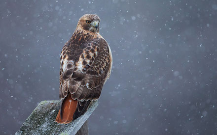
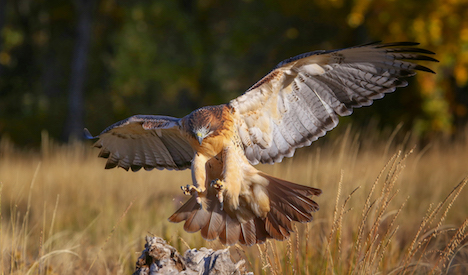

Wow! Based on your answers... You share similarities with the Red-tailed Hawk (Buteo jamaicensis)

The Red-tailed Hawk is a diurnal (active in the daytime) bird with incredile bravery when it comes to hunting and protecting their nests. The Red-tailed Hawk has a grip strength of 200 pounds per square inch that it uses to its advantage when hunting prey. This hawk will also defend its nest and offspring against anyone/anything that threatens it (including other hawks, eagles and even Great Horned owls). Despite being known as a violent predator, this hawk actually has a very peaceful and friendly side. Just like the Red-tailed Hawk, your defining characteristics are your bravery, friendliness and your prefrence of waking up earlier rather than later in the day.
Want to learn more about this species? Click the Feather!

Click on Ceasar to Restart!